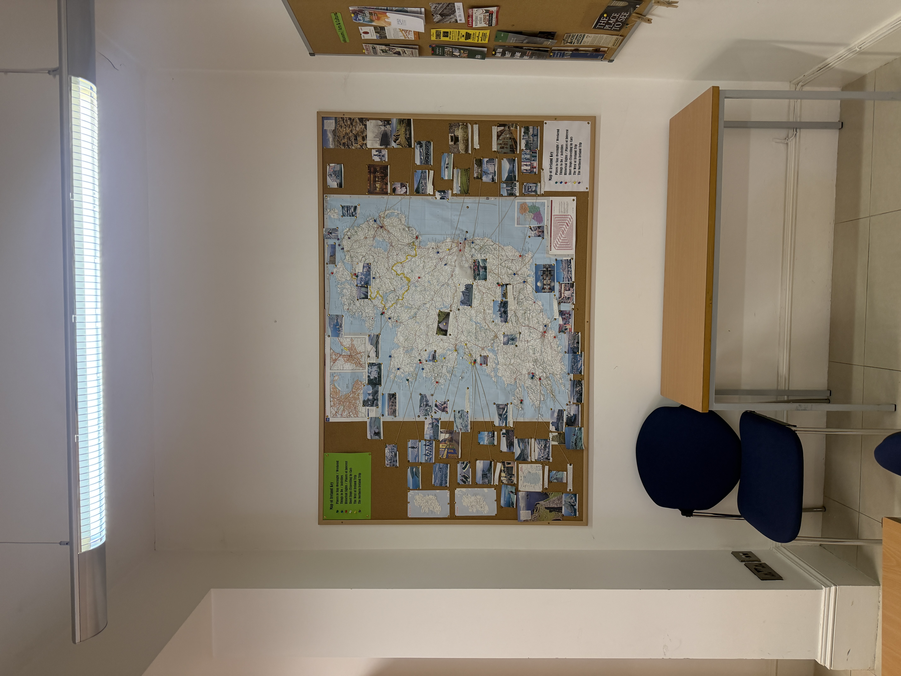
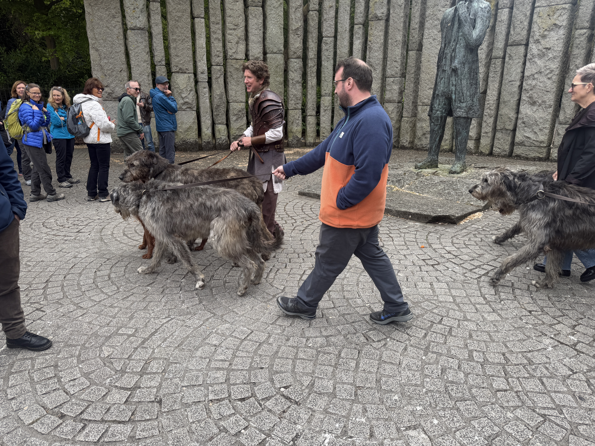
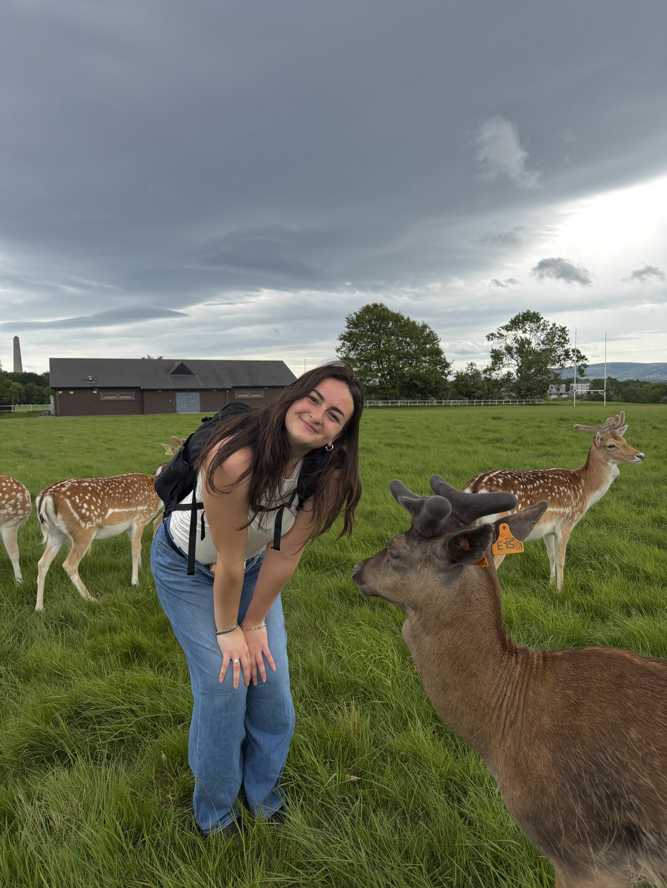
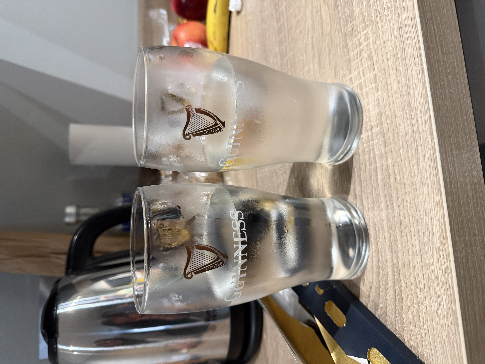
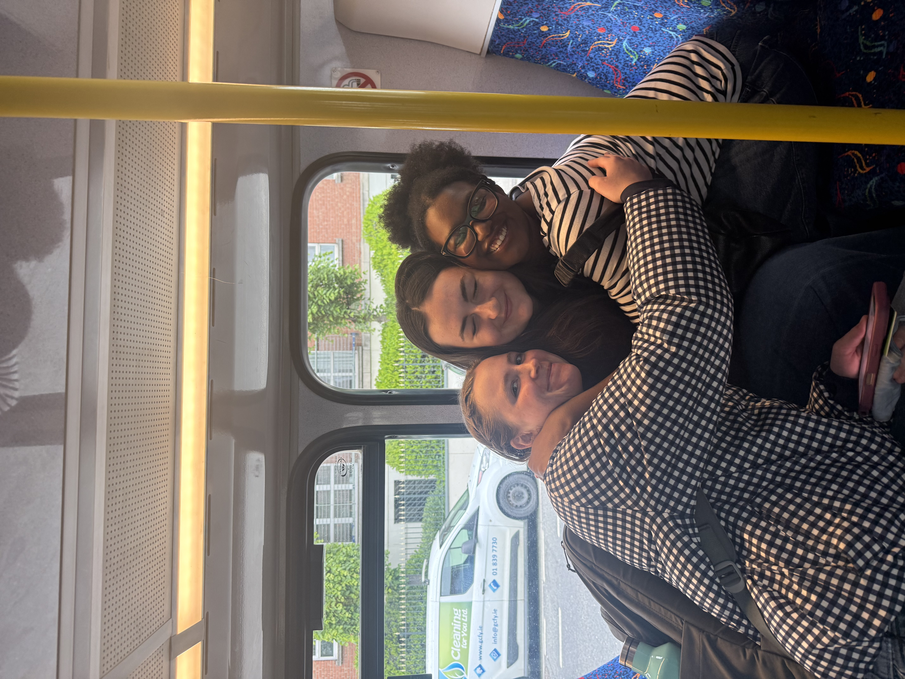

Dublin
Our home base for the trip was Dublin! There's so much to share, but here was some of my favorite parts!
The Search for the best Iced Latte
I know iced coffee isn't for everyone, but everyday I was here I was craving an Iced Vanilla Latte. I made it my mission to find the best one, and it wasn't what I expected.
The best was Little Geno's, located in Smith House. I also had a reuben there with an interesting vinager sauce.


Class
We had class in Champlain College, where CEA Cappa was housed, and it was just what I hoped it'd be. Everyone from CEA Cappa was super friendly and gave us lots of reccomendations for the remainder of our trip.
It took us so long to figure out how to turn the lights on in the basement bathroom, so we would go in there with our phone flashlights on scared half to death.
Bus Tour
One of the first cultural events was a bus tour. We learned all about Irish history by visiting Wolfe Tone Memorial and St. Stephen's Green, Phoenix Park, Dublin Castle, and The General Post Office.
We saw a guy with a bunch of Irish Wolfdogs; they were so big. The pictures don't do them justice.


Deer
On our Bus Tour we saw a bunch of deer from afar. We went on a hunt to find them again, and we brought them some treats! There had to have been over a hundred of them.
I brought out the bag of carrots and they all came running, I had to dump the bag out and step away!
Sneaky Souvenirs
As I'm writing this, my roommates and I have stolen 7 total Guinness pint glasses.
To stay hydrated we split the G with water!


On the Move
Our program gave us a LEAP Card with 5€ loaded onto it! We took the bus around town and took the DART to nearby cities like Bray for day trips.
Kinda nerdy but I thought the way you reloaded the card was cool. You just had to tap it on the back of your phone and use the Top-Up app!